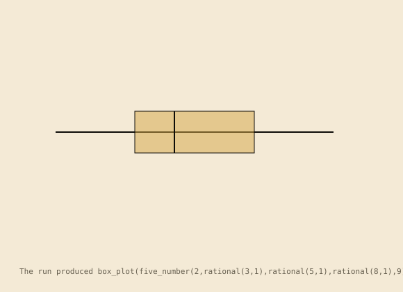
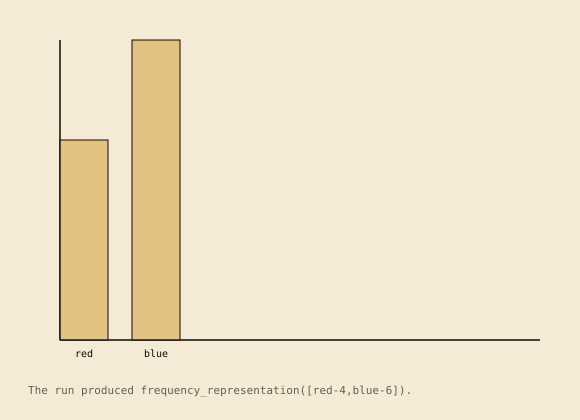
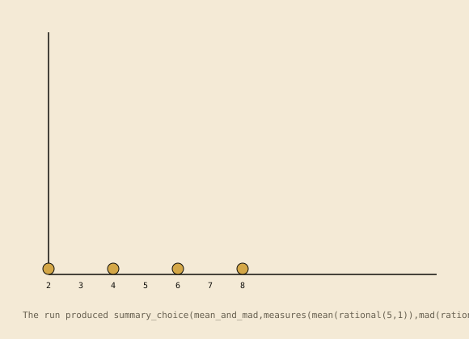
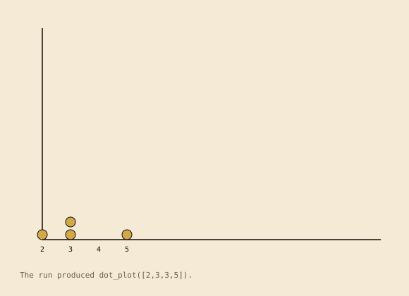
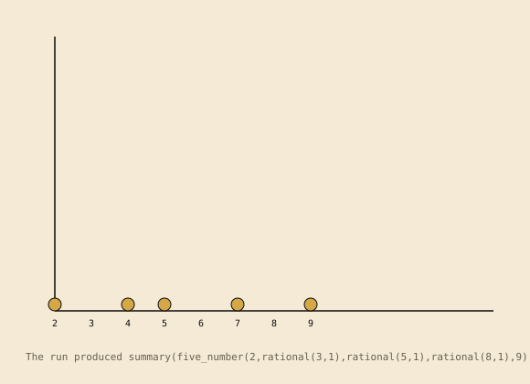
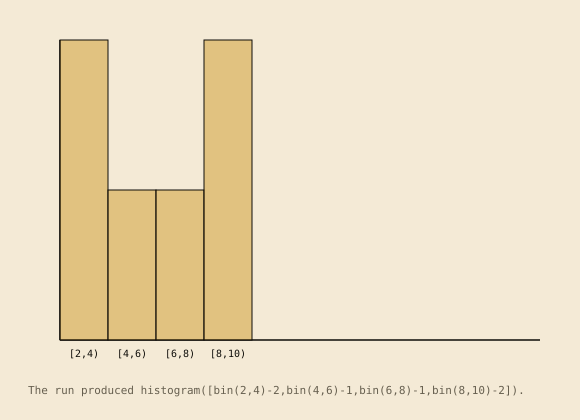
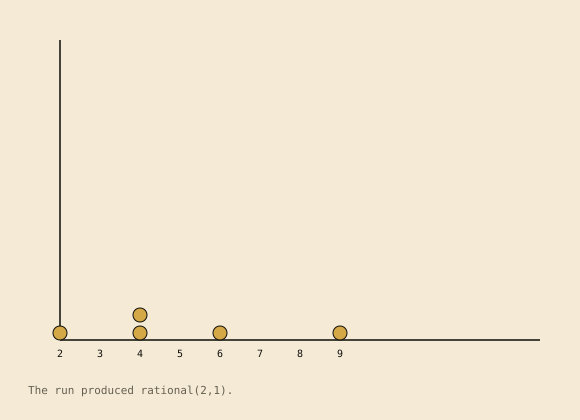
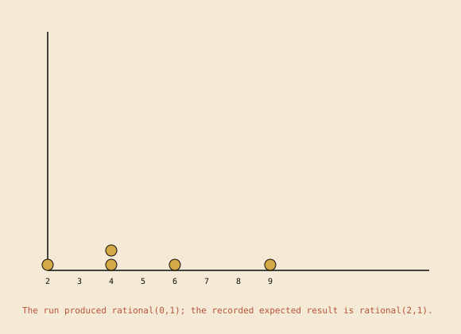
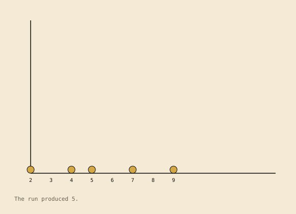
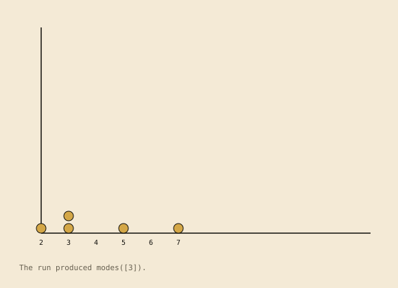

Construction: canonical action sequences merge by common prefix and structurally identical suffix. Branch labels name the kinds taking each branch. This models shared doing under canonical action names; the automata do not literally share states. For graphs with loops, the construction uses simple accepting paths and does not unfold repeated traversals.
1.box_plot_from_five_number_summary

The run produced box_plot(five_number(2,rational(3,1),rational(5,1),rational(8,1),9)). The scene is derived from the contract run (5tracesteps).Recorded transition graph; local action names remain on the edges.
Computed structure:linear_trace. no recorded branch or loop; the table records one accepting run. 6 states, 5 distinct actions, 0 branching states, 0 loop edges; 5 static rows and 5 observed rows.
2.categorical_frequency_bar_representation

The run produced frequency_representation([red-4,blue-6]). The scene is derived from the contract run (4tracesteps).Recorded transition graph; local action names remain on the edges.
Computed structure:linear_trace. no recorded branch or loop; the table records one accepting run. 5 states, 4 distinct actions, 0 branching states, 0 loop edges; 4 static rows and 4 observed rows.
3.distribution_summary_selection

The run produced summary_choice(mean_and_mad,measures(mean(rational(5,1)),mad(rational(2,1)))). The scene is derived from the contract run (3tracesteps).Recorded transition graph; local action names remain on the edges.
Computed structure:branching. one or more recorded states have multiple outgoing transitions; no loop edge is recorded. 5 states, 3 distinct actions, 1 branching states, 0 loop edges; 2 static rows and 3 observed rows.
4.dot_plot_frequency_representation

The run produced dot_plot([2,3,3,5]). The scene is derived from the contract run (3tracesteps).Recorded transition graph; local action names remain on the edges.
Computed structure:linear_trace. no recorded branch or loop; the table records one accepting run. 4 states, 3 distinct actions, 0 branching states, 0 loop edges; 3 static rows and 3 observed rows.
5.five_number_summary_and_iqr

The run produced summary(five_number(2,rational(3,1),rational(5,1),rational(8,1),9),iqr(rational(5,1))). The scene is derived from the contract run (5tracesteps).Recorded transition graph; local action names remain on the edges.
Computed structure:linear_trace. no recorded branch or loop; the table records one accepting run. 6 states, 5 distinct actions, 0 branching states, 0 loop edges; 5 static rows and 5 observed rows.
6.histogram_equal_interval_representation

The run produced histogram([bin(2,4)-2,bin(4,6)-1,bin(6,8)-1,bin(8,10)-2]). The scene is derived from the contract run (5tracesteps).Recorded transition graph; local action names remain on the edges.
Computed structure:linear_trace. no recorded branch or loop; the table records one accepting run. 6 states, 5 distinct actions, 0 branching states, 0 loop edges; 5 static rows and 5 observed rows.
7.mean_absolute_deviation

The run produced rational(2,1). The scene is derived from the contract run (5tracesteps).Recorded transition graph; local action names remain on the edges.
Computed structure:linear_trace. no recorded branch or loop; the table records one accepting run. 6 states, 5 distinct actions, 0 branching states, 0 loop edges; 5 static rows and 5 observed rows.
8.mean_as_balance_point
The run produced rational(5,1). The scene is derived from the contract run (4tracesteps).Recorded transition graph; local action names remain on the edges.
Computed structure:linear_trace. no recorded branch or loop; the table records one accepting run. 5 states, 4 distinct actions, 0 branching states, 0 loop edges; 4 static rows and 4 observed rows.
9.mean_as_fair_share
The run produced rational(5,1). The scene is derived from the contract run (4tracesteps).Recorded transition graph; local action names remain on the edges.
Computed structure:linear_trace. no recorded branch or loop; the table records one accepting run. 5 states, 4 distinct actions, 0 branching states, 0 loop edges; 4 static rows and 4 observed rows.
10.mean_deviation_without_absolute_value

The run produced rational(0,1); the recorded expected result is rational(2,1). The scene is derived from the contract run (4tracesteps).Recorded transition graph; local action names remain on the edges.
Computed structure:linear_trace. no recorded branch or loop; the table records one accepting run. 5 states, 4 distinct actions, 0 branching states, 0 loop edges; 4 static rows and 4 observed rows.
11.median_as_ordered_middle

The run produced 5. The scene is derived from the contract run (3tracesteps).Recorded transition graph; local action names remain on the edges.
Computed structure:branching. one or more recorded states have multiple outgoing transitions; no loop edge is recorded. 5 states, 3 distinct actions, 1 branching states, 0 loop edges; 2 static rows and 3 observed rows.
12.mode_as_maximal_frequency

The run produced modes([3]). The scene is derived from the contract run (3tracesteps).Recorded transition graph; local action names remain on the edges.
Computed structure:linear_trace. no recorded branch or loop; the table records one accepting run. 4 states, 3 distinct actions, 0 branching states, 0 loop edges; 3 static rows and 3 observed rows.
13.question_without_variability
No domain scene: the static scene emitter has no statistics form for the statistical_question contract used by this machine.
Recorded transition graph; local action names remain on the edges.
statistics_action_pairs.pl:93 observed on {"kind": "statistical_question", "population": "students", "variable": "commute_time"}
q_step_1
replace_varied_responses_with_one_fixed_answer
q_step_2
statistics_action_pairs.pl:93 observed on {"kind": "statistical_question", "population": "students", "variable": "commute_time"}
q_step_2
classify_as_nonstatistical_question
q_accept
statistics_action_pairs.pl:93 observed on {"kind": "statistical_question", "population": "students", "variable": "commute_time"}
Computed structure:linear_trace. no recorded branch or loop; the table records one accepting run. 4 states, 3 distinct actions, 0 branching states, 0 loop edges; 3 static rows and 3 observed rows.
statistics_action_pairs.pl:70 observed on {"kind": "statistical_question", "population": "students", "variable": "commute_time"}
q_step_1
identify_measured_variable
q_step_2
statistics_action_pairs.pl:70 observed on {"kind": "statistical_question", "population": "students", "variable": "commute_time"}
q_step_2
anticipate_varied_responses
q_step_3
statistics_action_pairs.pl:70 observed on {"kind": "statistical_question", "population": "students", "variable": "commute_time"}
q_step_3
classify_as_statistical_question
q_accept
statistics_action_pairs.pl:70 observed on {"kind": "statistical_question", "population": "students", "variable": "commute_time"}
Computed structure:linear_trace. no recorded branch or loop; the table records one accepting run. 5 states, 4 distinct actions, 0 branching states, 0 loop edges; 4 static rows and 4 observed rows.